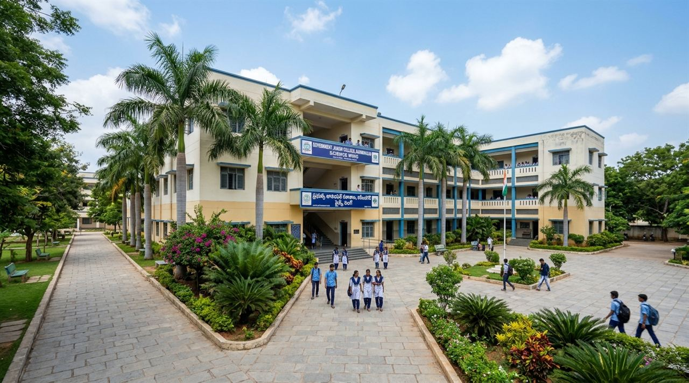

DATE
Pending
Pending
Admissions New · demo
Admissions information will be published here
Sample notice layout — not an official announcement. Publication date and document pending.
Welcome to our college
College information, admissions guidance, academic resources and student support.
Sample notice layout — not an official announcement. Publication date and document pending.
Sample notice layout — not an official announcement. Publication date and document pending.

Government Junior College, Science Wing, Karimnagar welcomes students and parents. Explore course information, academic resources and student support using the navigation on either side.
This website is a prepared information template. Items marked pending or placeholder must be approved by the college before publication.
Principal photograph pending
Verified photograph to be suppliedPrincipal details transcribed from the staff board photograph supplied on 30 October 2026.
The principal’s approved message will be added here.
Meet the administration →Prepare your questions and documents.
Admissions guide →Find resources and student support.
Student facilities →Exact entrance and map pin need confirmation. The link below searches by college name.
Search for the college on Google Maps ↗